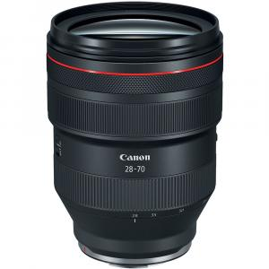

Lensa Canon RF 28-70mm F/2.0 L USM (dudukan RF)

Rp 450.000 / hari
Rp 900.000 / 3 hari
Sewa 2 hari GRATIS 1 hari
1 Hari = 24 Jam
Deskripsi Produk
Canon RF 28-70mm f/2.0 L USM adalah lensa zoom premium untuk kamera mirrorless Canon dengan mount RF, yang memiliki rentang fokus 28mm hingga 70mm dan bukaan diafragma besar f/2.0. Lensa ini termasuk seri L (Luxury), sehingga menawarkan kualitas gambar yang sangat tajam dan profesional.